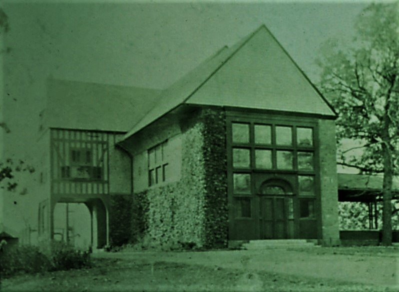
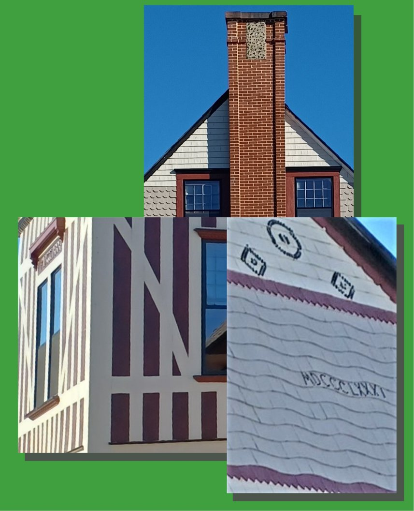

Historic Cornwall was graced first with its world-famous iron mine; its history credited with fueling the growth of the American colonies and a young nation. It would be easy for a newcomer to the area or a traveler simply passing through to miss that story altogether; the mine having been filled to the brim with water and almost completely obscured from public view.
The impact of the mine left its footprint on Cornwall and Lebanon in numerous ways, including the wealthy mansions that had sprung up with the growth of the industry. However, like the mine and all but one remaining furnace, those mansions are now few and mostly hidden from view. Each tells a story of its own yet holds in common the Coleman family name.

One such mansion has been spared complete decay and is finding new life: Millwood, known to some as "Alden Villa," is under restoration by its current owner Harvey Turner.
The mansion was erected in 1881 as a "summer cottage" much like the famous seacoast mansions of Newport, Rhode Island, visited occasionally by members of the Coleman family. These share a common architect, the illustrious Stanford White, renowned for his unique artistic embellishments both to the interior and exterior of his designs.
Millwood was built for Robert Percy Alden, son of Lt. Bradford Alden and Anne Coleman, granddaughter of Robert Coleman, namesake of the Coleman dynasty. A widow, Anne lived a life of affluence in New York City but participated as one of the heirs that managed the Coleman business in the mid-19th century. Known as "Auntie Anne" to young Robert H. Coleman, who by 1881 had inherited the greatest portion of wealth, her son Percy and "Bob" were cousins who grew up together and stayed close through school, European vacations, their respective marriages and Cornwall baseball games. Percy counseled Bob on occasion regarding his business matters.
When Robert built his first famous mansion "a stone's throw away" in Cornwall Center, Percy likewise had married and inhabited Millwood. Its history has been well-documented in various places and was recently the subject of a presentation by a local historian.

Much of the acreage of the estate is now the site of the Alden Place retirement community. Though the mansion has suffered severe neglect and vandalism in recent decades it has survived, and its new owner intends to completely restore it to its former glory.
The exterior has been nearly updated: roof and chimneys repaired, damaged wood, siding and trim renewed and freshly painted. Interior projects are on-going to restore damage and to make the mansion habitable.
A recent LebTown story provides an in-depth report on the history of Millwood and glimpse of the interior features of this incredible mansion. More updates are promised as progress is made.
Turner, a lifetime resident of Ephrata and known for similar restoration projects in Lititz and its surroundings, plans to make Millwood his home. Further, he envisions opening it as a venue for weddings and other occasions. His hope is that like other centerpieces of Cornwall's astounding history, Millwood becomes recognized as the treasure it was 140 years ago.
Stay tuned!
Originally published on LebTown, November 22, 2022.